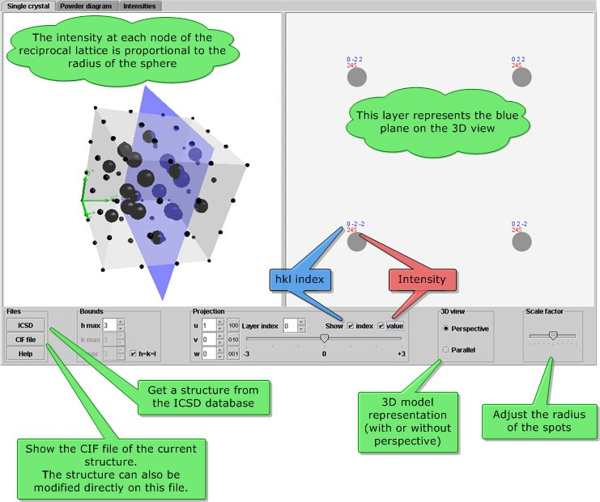
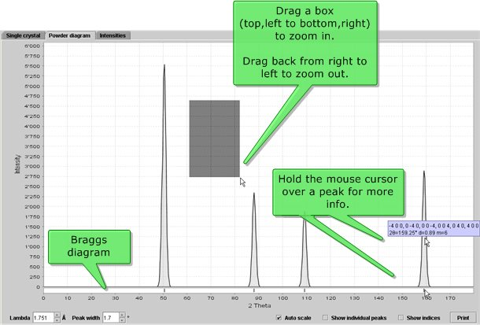
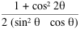
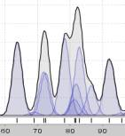
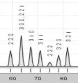

reciprOgraph
is an applet to represent the calculated intensities of any
substance diffracted by x-rays in form of a reciprocal lattice or a
powder diffractogram.
The structure to be studied can be selected
from the ICSD (Inorganic Crystal Structure Database)
or can be read from a CIF file.
The program can also be inititiated from a structure represented in
crystalOgraph.
The intensities are given by the square of the structure factor modulus
I(h)=|F(h)|2 where
h=h
a*+k
b*+l
c* is a reciprocal vector with integer coefficients hkl and
reciprocal lattice vectors
a*,b* and c*.
In the single crystal pane, each intensity I(h) is represented
on the node of the reciprocal lattice vector
h with size proportional to its intensity.
The intensities can be analysed in terms of reciprocal lattice planes
defined by the normal
u=ua+vb+wc
where a, b and c are the lattice constants
and u, v and w are integers.
For each value of the triplet, the lattice plane can be shifted by a
positive or negative parrallel displacement.
The applet can also represent the same intensities in form of a
powder diagram where various options can be selected,
inclulding wavelength, peak width and more.
Single cystal pane

In both 3D and 2D panes :
- Drag the mouse to rotate (3D model) or move (2D projection).
- Zoom in or out with mouse wheel or CTRL key.
Bounds
The bounds are maximum |h| |k| |l|
indices used to represent the intensities.
Projection
Here you can specify the orientation of the blue plane to select a
specific recripocal layer:
- Set the plane orientation by the indices (u v w).
- Translate the plane (layer index).
Powder diagram pane

Intensities
The intensities of the powder diffraction patterns are corrected for the
Lorentz-polarisation factor :

Lambda
The wave length used for the diffraction.
Peak width
Adjust the width at half height of the peak.
Zoom
To zoom in, drag a box (from top, left to bottom, right).
To zoom out, check Auto scale box or drag the mouse from right
to left on the chart.
Show individual peaks
Shows the contribution of each individual line to the peak.

Show indices
Shows the (h k l) indices for each peak or a representative
index if at least two lines are superimposed.

Print
Start a printer job to print the whole chart.
Structure factors pane
A list of all structure factors including (hkl),
d(hkl), 2theta, F(re), F(im) can be consulted.